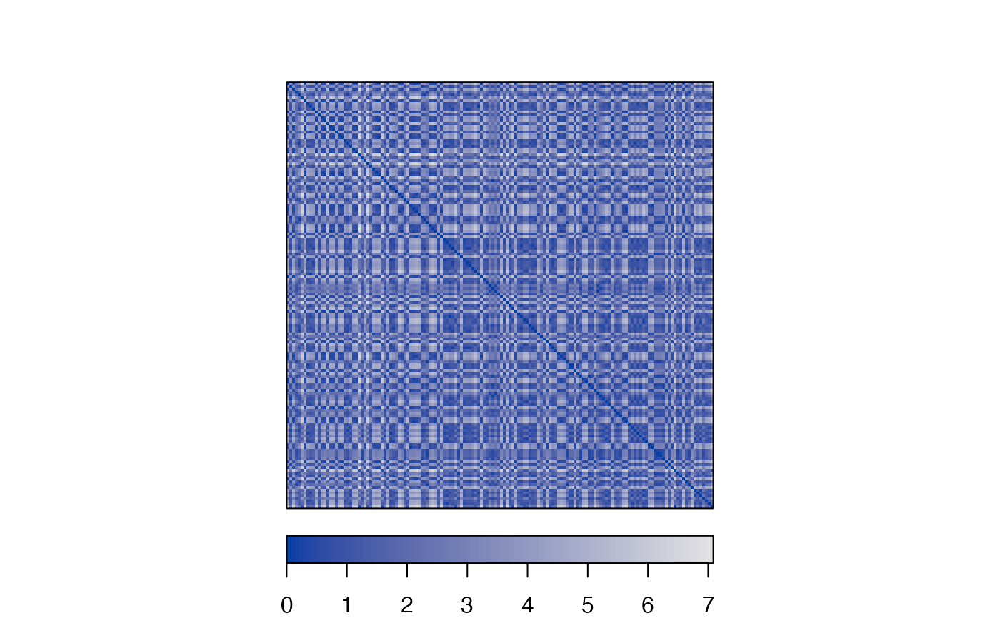
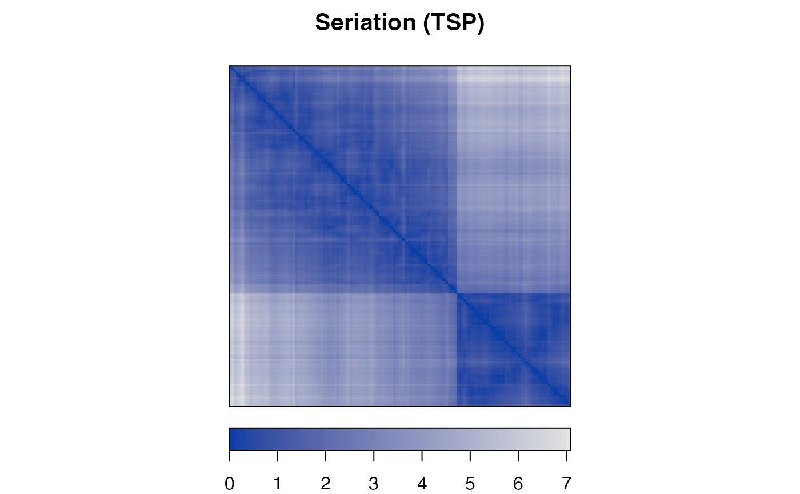
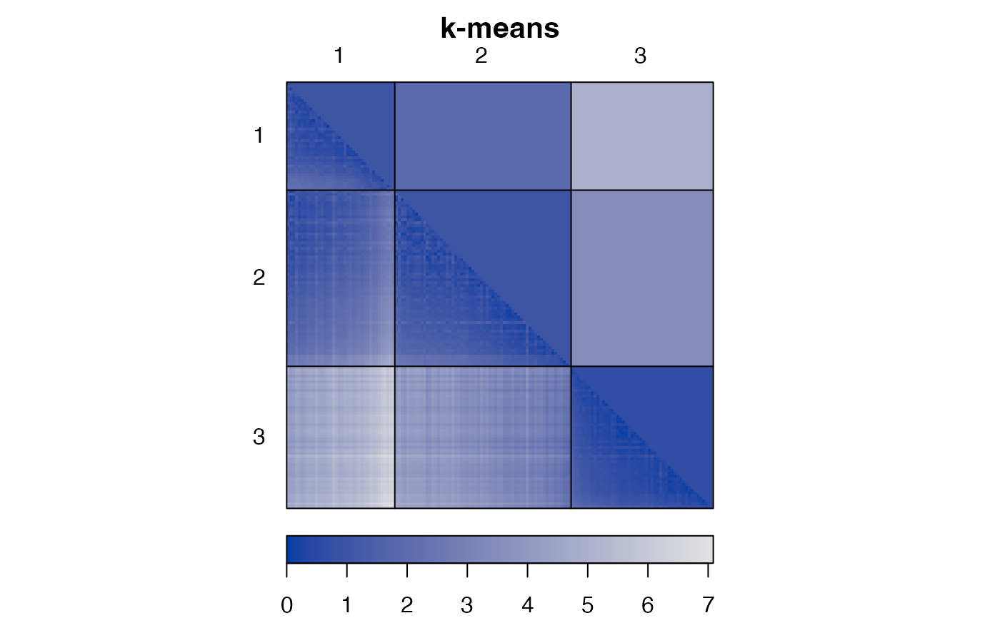
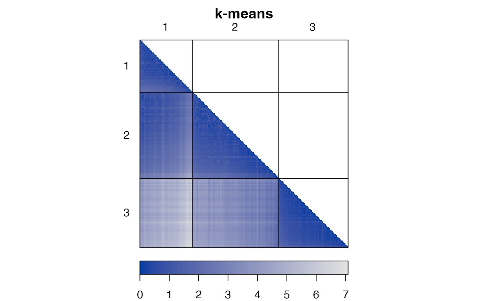
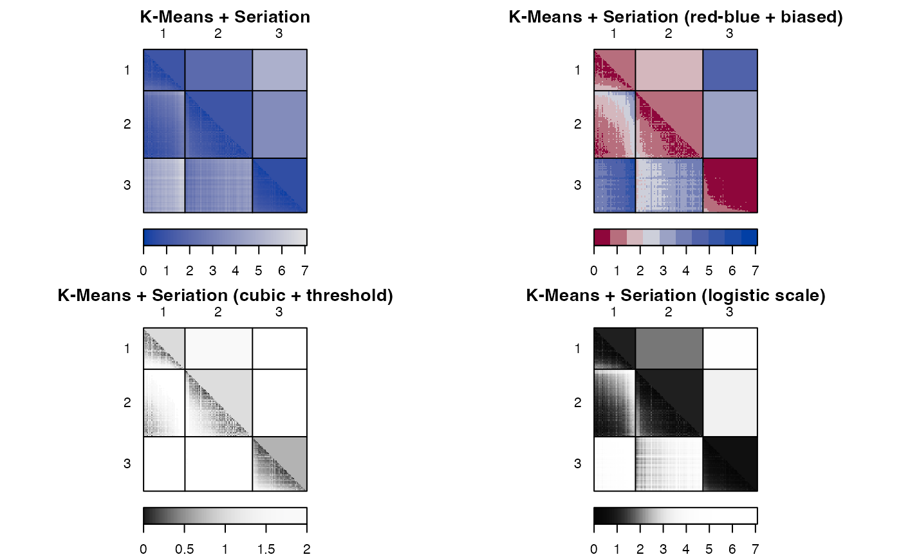
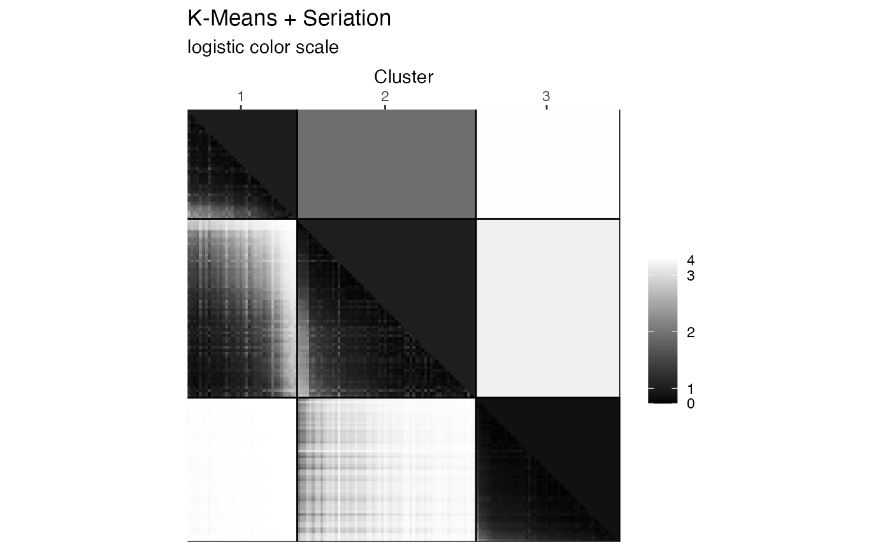

Visualizes a dissimilarity matrix using seriation and matrix shading using the method developed by Hahsler and Hornik (2011). Entries with lower dissimilarities (higher similarity) are plotted darker. Dissimilarity plots can be used to uncover hidden structure in the data and judge cluster quality.
Usage
dissplot(
x,
labels = NULL,
method = "Spectral",
control = NULL,
lower_tri = TRUE,
upper_tri = "average",
diag = TRUE,
cluster_labels = TRUE,
cluster_lines = TRUE,
reverse_columns = FALSE,
options = NULL,
...
)
# S3 method for reordered_cluster_dissimilarity_matrix
plot(
x,
lower_tri = TRUE,
upper_tri = "average",
diag = TRUE,
options = NULL,
...
)
# S3 method for reordered_cluster_dissimilarity_matrix
print(x, ...)
ggdissplot(
x,
labels = NULL,
method = "Spectral",
control = NULL,
lower_tri = TRUE,
upper_tri = "average",
diag = TRUE,
cluster_labels = TRUE,
cluster_lines = TRUE,
reverse_columns = FALSE,
...
)Arguments
- x
an object of class dist.
- labels
NULLor an integer vector of the same length as rows/columns inxindicating the cluster membership for each object inxas consecutive integers starting with one. The labels are used to reorder the matrix.- method
A single character string indicating the seriation method used to reorder the clusters (inter cluster seriation) as well as the objects within each cluster (intra cluster seriation). If different algorithms for inter and intra cluster seriation are required,
methodcan be alistof two named elements (inter_clusterandintra_clustereach containing the name of the respective seriation method. Uselist_seriation_methods()withkind = "dist"to find available algorithms.Set method to
NAto plot the matrix as is (no or, if cluster labels are supplied, only coarse seriation). For intra cluster reordering with the special method"silhouette width"is available (fordissplot()only). Objects in clusters are then ordered by silhouette width (from silhouette plots). If nomethodis given, the default method ofseriate.dist()is used.A third list element (named
aggregation) can be added to control how inter cluster dissimilarities are computed from from the given dissimilarity matrix. The choices are"avg"(average pairwise dissimilarities; average-link),"min"(minimal pairwise dissimilarities; single-link),"max"(maximal pairwise dissimilarities; complete-link), and"Hausdorff"(pairs up each point from one cluster with the most similar point from the other cluster and then uses the largest dissimilarity of paired up points).- control
a list of control options passed on to the seriation algorithm. In case of two different seriation algorithms,
controlcan contain a list of two named elements (inter_clusterandintra_cluster) containing each a list with the control options for the respective algorithm.- upper_tri, lower_tri, diag
a logical indicating whether to show the upper triangle, the lower triangle or the diagonal of the distance matrix. The string "average" can also be used to display within and between cluster averages in the two triangles.
- cluster_labels
a logical indicating whether to display cluster labels in the plot.
- cluster_lines
a logical indicating whether to draw lines to separate clusters.
- reverse_columns
a logical indicating if the clusters are displayed on the diagonal from north-west to south-east (
FALSE; default) or from north-east to south-west (TRUE).- options
a list with options for plotting the matrix (
dissplotonly).plota logical indicating if a plot should be produced. ifFALSE, the returned object can be plotted later using the functionplotwhich takes as the second argument a list of plotting options (seeoptionsbelow).silhouettesa logical indicating whether to include a silhouette plot (see Rousseeuw, 1987).thresholda numeric. If used, only plot distances below the threshold are displayed. Consider also usingzlimfor this purpose.colcolors used for the image plot.keya logical indicating whether to place a color key below the plot.zlimrange of values to display (defaults to rangex).axes"auto"(default; enabled for less than 25 objects),"y"or"none".maintitle for the plot.newpagea logical indicating whether to start plot on a new page (seegrid.newpage().popa logical indicating whether to pop the created viewports? (see package grid)gp,gp_lines,gp_labelsobjects of classgparcontaining graphical parameters for the plot lines and labels (seegpar().
- ...
dissplot(): further arguments are added tooptions.ggdissplot()further arguments are passed on toggpimage().
Value
dissplot() returns an invisible object of class
cluster_proximity_matrix with the following elements:
- order
NULLor integer vector giving the order used to plotx.- cluster_order
NULLor integer vector giving the order of the clusters as plotted.- method
vector of character strings indicating the seriation methods used for plotting
x.- k
NULLor integer scalar giving the number of clusters generated.- description
a
data.framecontaining information (label, size, average intra-cluster dissimilarity and the average silhouette) for the clusters as displayed in the plot (from top/left to bottom/right).
This object can be used for plotting via plot(x, options = NULL, ...),
where x is the object and options contains a list with
plotting options (see above).
ggdissplot() returns a ggplot2 object representing the plot.
The plot description as an object of class reordered_cluster_dissimilarity_matrix.
Details
The plot can also be used to visualize cluster quality (see Ling 1973). Objects belonging to the same cluster are displayed in consecutive order. The placement of clusters and the within cluster order is obtained by a seriation algorithm which tries to place large similarities/small dissimilarities close to the diagonal. Compact clusters are visible as dark squares (low dissimilarity) on the diagonal of the plot. Additionally, a Silhouette plot (Rousseeuw 1987) is added. This visualization is similar to CLUSION (see Strehl and Ghosh 2002), however, allows for using arbitrary seriating algorithms.
Note: Since pimage() uses grid, it should not be mixed
with base R primitive plotting functions.
References
Hahsler, M. and Hornik, K. (2011): Dissimilarity plots: A visual exploration tool for partitional clustering. Journal of Computational and Graphical Statistics, 10(2):335--354. doi:10.1198/jcgs.2010.09139
Ling, R.F. (1973): A computer generated aid for cluster analysis. Communications of the ACM, 16(6), 355--361. doi:10.1145/362248.362263
Rousseeuw, P.J. (1987): Silhouettes: A graphical aid to the interpretation and validation of cluster analysis. Journal of Computational and Applied Mathematics, 20(1), 53--65. doi:10.1016/0377-0427(87)90125-7
Strehl, A. and Ghosh, J. (2003): Relationship-based clustering and visualization for high-dimensional data mining. INFORMS Journal on Computing, 15(2), 208--230. doi:10.1287/ijoc.15.2.208.14448
See also
Other plots:
VAT(),
bertinplot(),
hmap(),
palette(),
pimage()
Examples
data("iris")
# shuffle rows
x_iris <- iris[sample(seq(nrow(iris))), -5]
d <- dist(x_iris)
# Plot original matrix
dissplot(d, method = NA)

# Plot reordered matrix using the nearest insertion algorithm (from tsp)
dissplot(d, method = "TSP", main = "Seriation (TSP)")

# Cluster iris with k-means and 3 clusters and reorder the dissimality matrix
l <- kmeans(x_iris, centers = 3)$cluster
dissplot(d, labels = l, main = "k-means")

# show only distances as lower triangle
dissplot(d, labels = l, main = "k-means", lower_tri = TRUE, upper_tri = FALSE)

# Use a grid layout to place several plots on a page
library("grid")
grid.newpage()
pushViewport(viewport(layout=grid.layout(nrow = 2, ncol = 2),
gp = gpar(fontsize = 8)))
pushViewport(viewport(layout.pos.row = 1, layout.pos.col = 1))
# Visualize the clustering (using Spectral between clusters and MDS within)
res <- dissplot(d, l, method = list(inter = "Spectral", intra = "MDS"),
main = "K-Means + Seriation", newpage = FALSE)
popViewport()
pushViewport(viewport(layout.pos.row = 1, layout.pos.col = 2))
# More visualization options. Note that we reuse the reordered object res!
# color: use 10 shades red-blue, biased towards small distances
plot(res, main = "K-Means + Seriation (red-blue + biased)",
col= bluered(10, bias = .5), newpage = FALSE)
popViewport()
pushViewport(viewport(layout.pos.row = 2, layout.pos.col = 1))
# Threshold (using zlim) and cubic scale to highlight differences
plot(res, main = "K-Means + Seriation (cubic + threshold)",
zlim = c(0, 2), col = grays(100, power = 3), newpage = FALSE)
popViewport()
pushViewport(viewport(layout.pos.row = 2, layout.pos.col = 2))
# Use gray scale with logistic transformation
plot(res, main = "K-Means + Seriation (logistic scale)",
col = gray(
plogis(seq(max(res$x_reordered), min(res$x_reordered), length.out = 100),
location = 2, scale = 1/2, log = FALSE)
),
newpage = FALSE)
popViewport(2)

# The reordered_cluster_dissimilarity_matrix object
res
#> object of class 'reordered_cluster_dissimilarity_matrix'
#> matrix dimensions: 150 x 150
#> dissimilarity measure: 'euclidean'
#> number of clusters k: 3
#>
#> cluster description
#> position label size aggregated_dissimilarity avg_silhouette_width
#> 1 1 1 38 1.0229060 0.4511051
#> 2 2 2 62 1.0338691 0.4173199
#> 3 3 3 50 0.6968169 0.7981405
#>
#> used seriation methods
#> inter-cluster: 'Spectral'
#> intra-cluster: 'MDS'
#>
#> dissimilarity aggregation method: 'avg'
names(res)
#> [1] "x_reordered" "labels"
#> [3] "seriation_methods" "aggregation_method"
#> [5] "k" "cluster_dissimilarities"
#> [7] "sil" "order"
#> [9] "cluster_order" "diss_measure"
#> [11] "description"
## --------------------------------------------------------------------
## ggplot-based dissplot
if (require("ggplot2")) {
library("ggplot2")
# Plot original matrix
ggdissplot(d, method = NA)
# Plot seriated matrix
ggdissplot(d, method = "TSP") +
labs(title = "Seriation (TSP)")
# Cluster iris with k-means and 3 clusters
l <- kmeans(x_iris, centers = 3)$cluster
ggdissplot(d, labels = l) +
labs(title = "K-means + Seriation")
# show only lower triangle
ggdissplot(d, labels = l, lower_tri = TRUE, upper_tri = FALSE) +
labs(title = "K-means + Seriation")
# No lines or cluster labels and add a label for the color key (fill)
ggdissplot(d, labels = l, cluster_lines = FALSE, cluster_labels = FALSE) +
labs(title = "K-means + Seriation", fill = "Distances\n(Euclidean)")
# Diverging color palette with manual set midpoint and different seriation methods
ggdissplot(d, l, method = list(inter = "Spectral", intra = "MDS")) +
labs(title = "K-Means + Seriation", subtitle = "biased color scale") +
scale_fill_gradient2(midpoint = median(d))
# Use manipulate scale using package scales
library("scales")
# Threshold (using limit and na.value) and cubic scale to highlight differences
cubic_dist_trans <- trans_new(
name = "cubic",
# note that we have to do the inverse transformation for distances
trans = function(x) x^(1/3),
inverse = function(x) x^3
)
ggdissplot(d, l, method = list(inter = "Spectral", intra = "MDS")) +
labs(title = "K-Means + Seriation", subtitle = "cubic + biased color scale") +
scale_fill_gradient(low = "black", high = "white",
limit = c(0,2), na.value = "white",
trans = cubic_dist_trans)
# Use gray scale with logistic transformation
logis_2_.5_dist_trans <- trans_new(
name = "Logistic transform (location, scale)",
# note that we have to do the inverse transformation for distances
trans = function(x) plogis(x, location = 2, scale = .5, log = FALSE),
inverse = function(x) qlogis(x, location = 2, scale = .5, log = FALSE),
)
ggdissplot(d, l, method = list(inter = "Spectral", intra = "MDS")) +
labs(title = "K-Means + Seriation", subtitle = "logistic color scale") +
scale_fill_gradient(low = "black", high = "white",
trans = logis_2_.5_dist_trans,
breaks = c(0, 1, 2, 3, 4))
}
#> Scale for 'fill' is already present. Adding another scale for 'fill', which
#> will replace the existing scale.
#> Scale for 'fill' is already present. Adding another scale for 'fill', which
#> will replace the existing scale.
#> Scale for 'fill' is already present. Adding another scale for 'fill', which
#> will replace the existing scale.
